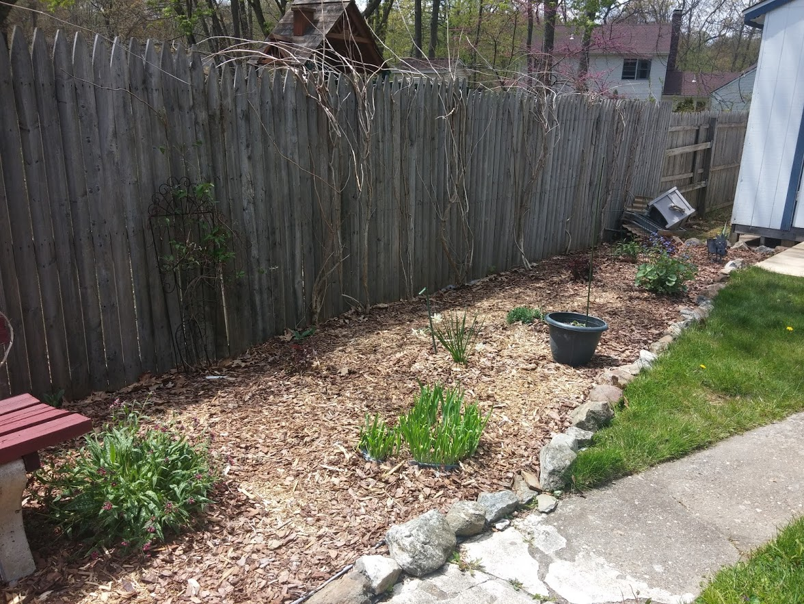
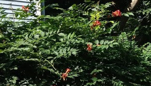
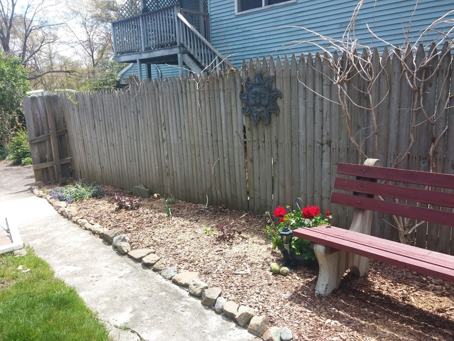
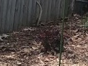
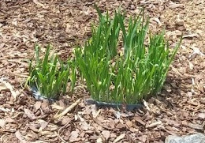
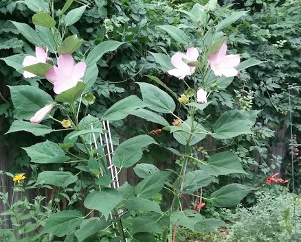
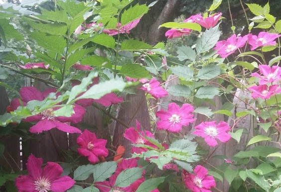
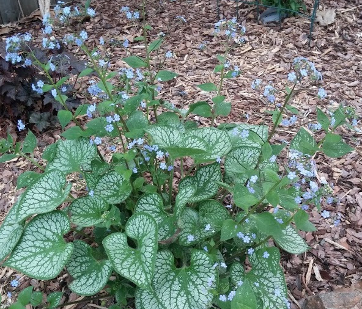
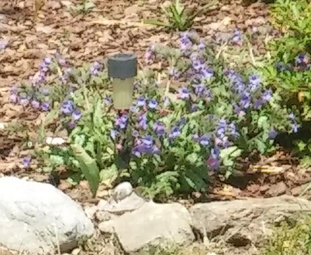
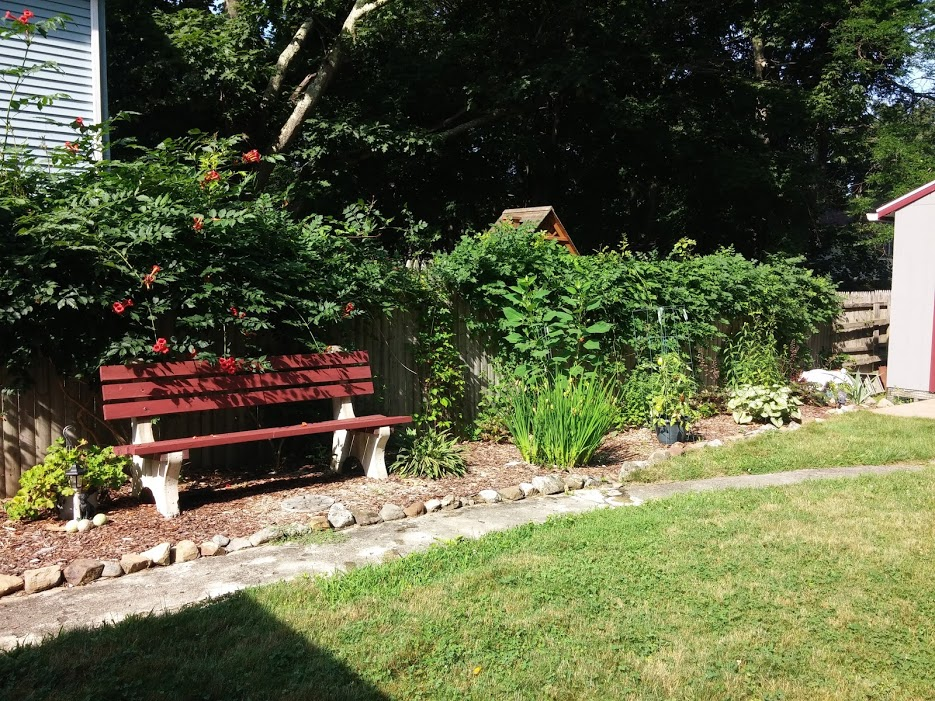

General Mums Info
- Blooms in the late summer
- Deadhead as needed
- Thin as needed, usually very little
- General fertilizer

- Pests may include deer and bugs, treat with garden pest spray
- Cut all the way back once done blooming
- Also trim back to 6in. in early June to promote increase blooms
- Located in various gardens with several colors
- For more info visit Mum info
General Black-eye Susan Info
- Blooms mid Summer
- Deadhead regularly to promote new blooms
- Thin in spring and fall, these will take over the garden!
- General fertilizer

- Usually deer and ground hog likes these
- Perenniel,At the end of the flowering season,cut down to ground.
- Found everywhere in yard front and back
- For more info visit black-eyed Susan info
General Trumpet Vine Info
- Blooms mid Summer
- pull out new small shoots and train vine on fence
- after bloom time use hedge trimmer to cut back
- General fertilizer
- 
- No known pests
- watch that new shoots don't root themselves, keep it trained on fence
- Found along back stockade fence
- For more info visit Trumpet Vine info
A spring image of the fence side garden, front view

General Coral Bells Info
- Bloom in the summer
- Clip flowers after they fade
- Thin small shoots as needed but not needed often
- General fertilizer
- 
- No know pests
- Tall spikes of white flowers, easy care and shade tolerant
- Located mostly here but that may change
- For more info visit Coral Bell's info
General Iris Info
- Blooms in the early-mid summer
- Clip flower after flower fades, a pull off dryed leaves
- Thin as needed
- General fertilizer
- 
- No known pests
- Perenniel,tall flowers, may leave greens till late summer
- This type is only located here
- The iris in this garden has slender leaves and blooms later, may be a flag iris and is located near the bench
- For more info visit Irisinfo

General Hibiscus Info
- Blooms in the early-mid summer
- Clip flower after flower fades.
- No thinning needed, but needs staking
- General fertilizer
- 
- No known pests
- Perenniel,very tall plant >4ft; cut back to ground after flowers fade
- This type is only located here, this website is not very informative so look around the web for other sites that may help
- For more info visit Hibiscus info
General Clematis Info
- Blooms late spring / early summer
- Trim faded flowers and dead branches
- This is the only one and looks pretty with trumpet vine blooms
- General fertilizer
- 
- No known pests
- climbing vine type plant
- Located in just this garden, for now
- For more info visit Clematis info
General Brunnera Info
- Blooms in the late spring
- Clip flower after flower fades,cut back leaves late fall
- No need to thin
- General fertilizer
- 
- No known pests
- tall spiky blue flowers, may leave greens till late fall
- This type is only located here
- For more info visit Brunnera info
General Pulmonaria Info
- Blooms late spring , early summer
- Clip faded flowers/leaves
- Divide as needed
- General fertilizer
- 
- no known pests
- better in part shade, they fade fast in the summer gardens
- Located in amny gardens, does best in shady areas
- For more info visit Pulmonaria info
A summer image of the front woods edge garden
This garden was revamped early 2020 and has done well with some caveats...first there is an invasive ground cover that comes up mostly at the house end of the garden, pull out from roots if possible, it will take over. The trumpet vine tend to spread , pull out new shoots that come up, from the roots! Definately stake up the hibiscus and I usually put the taller garden fence around the phlox so they stay upright. Trim mums in June to get more managable blooms in early fall. Mulch!!!!